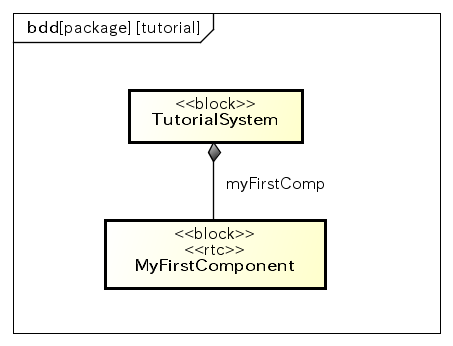
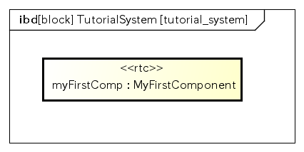
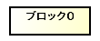
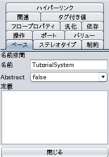
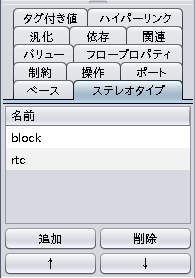
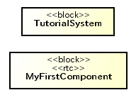

Powered By
このプラグインは、独立行政法人産業技術総合研究所と共同研究した成果を活用しています。

このプラグインは、独立行政法人産業技術総合研究所と共同研究した成果を活用しています。
このチュートリアルでは、SysMLを用いて最も基本的なRTコンポーネントを設計する方法と、OpenRTPを用いてRTコンポーネントのソースコードのひな型を生成する方法について説明します。
なお、OpenRTMや、ソースコードを実行する際に必要なOpenRTM-aistの概要やインストール方法は OpenRTM-aist公式サイト を参照して下さい。
RTコンポーネントの設計、実行の手順は以下のとおりです。
RTコンポーネントMyFirstComponentを含むシステムを設計します。
ブロック図

内部ブロック図

まずは、astah* SysMLを起動し、設計するロボットシステムのモデルを管理するプロジェクトを作成します。
OpenRTM-aistが提供するデータ型などを定義したテンプレートファイルを元に、新規ロボットシステムの設計を行うプロジェクトを作成します。
astah* SysMLを起動し、メニュー ファイル ‣ テンプレートからプロジェクトの新規作成 を選択します。
サブメニューから”テンプレートからプロジェクトの新規作成”を選択し、この SysML-RTM連携 のダウンロードファイルにも含まれる rtc_template.asml を選択します。
それでは、ブロック定義図を作成するため、メニュー 図 ‣ ブロック定義図 を選択します。
ブロック定義図では、設計するシステム自体を表すブロックと、そのシステムを構成するRTコンポーネントをrtcステレオタイプが付与されたブロックとして定義します。
最初に設計するシステム自体を表すブロックを作成するため、「ツールバー」-「ブロック」を選択してブロック定義図の好きな場所をクリックします。すると、図のように”ブロック0”という名前の長方形が表示されます。

この長方形は、システムを構成する要素を意味するブロックというモデルです。
この「ブロック0」の名前を、これから作成したいロボットシステムの名前として、TutorialSystemに変更してみましょう。
ブロック定義図上で作成した「ブロック0」を選択します。
ブロック0の名前を変更します
画面左下の「プロパティビュー」に、選択されたブロックのプロパティが表示されます。
これから設計するTutorialSystemをプロパティビューの名前に入力してください。このように、図や構造ツリーで選択したモデルのプロパティは、プロパティビューから表示、編集できます。
次に、TutorialSystemを構成するRTコンポーネントとして、MyFirstComponentブロックを作成しましょう。先程と同様にツールバーよりブロックを作成し、名前を”MyFirstComponent”と変更します。

ブロック定義図のデフォルトの設定では、ステレオタイプは図上に表示されません。 ブロック定義図を選択しプロパティビューの「初期設定」タブの「ステレオタイプの表示」にチェックをし、「全図要素に反映」ボタンをクリックすると、図上にステレオタイプが表示されるようになります。
これまでの操作で、次のようなモデルが作成されているはずです。

システム(TutorialSystem)とRTコンポーネント(MyFirstComponent)を設計できたので、MyFirstComponentがTutorialSystemを構成する要素であることを、ブロック定義図上で設計しましょう。
SysMLでは全体と部分という関係を表すUMLのコンポジションに相当する、部品関連(Part Assosication)が用意されています。astah* SysMLでは部品関連をコンポジションと称して提供しています。 今回、MyFirstComponentはTutorialSystemを構成する部品であることを定義します。
「ツールバー」-「関連 - コンポジション」を選択し、TutorialSystemからMyFirstComponentに向けて線を引いて下さい。
黒菱形が付いているコネクタの端側が全体を表します。今回の場合は、TutorialSystem側に黒菱形が表示されているはずです。 このようにコンポジションによって、全体と部品関係を設計できます。
ブロック定義図でシステムにどのような要素で構成されるかを設計したので、次に内部ブロック図を用いて、システムを構成する要素間の関係性を設計します。
今回はTutorialSystemには、MyFirstComponentしか存在しないので関係性は設計できませんが、今後のチュートリアルで説明していきます。
内部ブロック図は、ブロック定義図上でブロックを選択しコンテキストメニューから「内部ブロック図の追加」を選択して作成します。
TutorialSystemを選択して「内部ブロック図の追加」を選択してください。次のような図が作成され、開かれるはずです。
内部ブロック図は作成されるときに、選択されたブロックからコンポジション関係にあるブロックからプロパティを作成します。
SysMLのプロパティはUMLのパートに相当し、あるブロックのインスタンスひとつから見た構成要素や、保持する値を表現するモデルです。astah* SysMLではプロパティをパートと称して提供しています。
今回は”:MyFirstComponent”パートを選択し、プロパティビューから名前にmyFirstCompと設定して、”myFirstComp:MyFirstComponent”パートとして定義して下さい。
SysML-RTM連携 では、この内部ブロック図を元にRTC/RTSプロファイルを生成します。生成されるRTSプロファイルは内部ブロック図の名前を利用します。そのため内部ブロック図の名前は英数字で構成される必要があります。
astah* SysMLの右下に「モデル検証」というビューに、次のようなエラーが表示されているはずです。
モデル検証ビューは、編集中の設計モデル中の不整合を一覧表示、操作するビューを提供します。エラーが存在する場合、RTC/RTSプロファイルが生成できませんので、エラーを解決してください。
内部ブロック図を選択し、プロパティビューから名前に”tutorial_system”と入力してください。設定すると、モデル検証ビューからエラーが削除されるはずです。
内部ブロック図からRTC/RTSプロファイルを生成するため、これまで設計してきた内部ブロック図を開き、メニュー ツール ‣ SysML-RTM ‣ 開いている図からRTC/RTSプロファイルを生成する を選択します。
次のようなダイアログが表示されるので、RTC/RTSプロファイルを生成するフォルダを指定し「生成」ボタンを押下して下さい。
出力場所で指定したフォルダ(以下の例では/tmp/tutorial/basic_tutorial)には、次のようなファイルが生成されています。
/tmp/tutorial/basic_tutorial/ |- MyFirstComponent.xml |- tutorial_system.xml
RTコンポーネントMyFirstComponentのRTCプロファイル
TutorialSystemのRTSプロファイル
なお、RTCBuilderやRTSystemEditorの操作方法やOpenRTM-aistに準拠したRTコンポーネントのビルド方法については、公式サイトを参照下さい。
生成されたRTCプロファイルをRTCBuilderにインポートし、MyFirstComponentのソースコードのひな形を生成します。
RTCBuilderを起動し、MyFirstComponentプロジェクトを作成します。
「基本」タブのプロファイル情報のインポート・エクスポートの「インポート」ボタンから生成したRTCプロファイルを選択します。
言語タブでC++やPythonなど任意の言語を選択し「基本」タブの「コード生成とパッケージ」の「コード生成」ボタンを押下し、ソースコードのひな形を生成します。
このような手順でSysMLから生成されたRTCプロファイルを元に、RTコンポーネントのソースコードのひな形を作成できます。
生成されたRTSプロファイルを用いて、RTSystemEditorでシステムを復元します。
具体的には、RTSystemEditorを起動し、システムエディタのコンテキストメニュー「Open and Restore」を選択し、RTSプロファイルを選択し復元します。
Hint
RTCBuilderから生成されるひな形は、パート名がコンポーネント名0という名前で生成されます。SysMLのパートで指定したプロパティ名と一致しない場合、RTSystemEditorでの復元でエラーが発生します。 rtc.confの次のプロパティを修正し、RTコンポーネントのCORBA Naming Serverにバインドする際の名前、及びRTコンポーネントのインスタンス名が、SysMLのプロパティ名と一致するように修正してから、システムを復元して下さい。
- naming.formatプロパティ : CORBA Naming Serverに登録する際の名前
- manager.components.precreate : RTコンポーネントのインスタンス名
ex)rtc.conf
naming.format : myFirstComp.rtc
manager.components.precreate: MyFirstComponent?instance_name=myFirstComp
このようにSysMLのブロック定義図と内部ブロック図を用い、RTコンポーネントを含んだロボットシステムのモデルを設計できます。